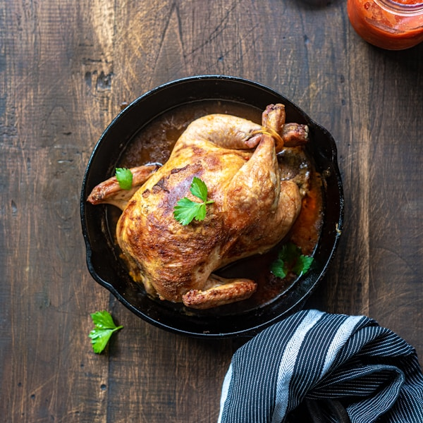
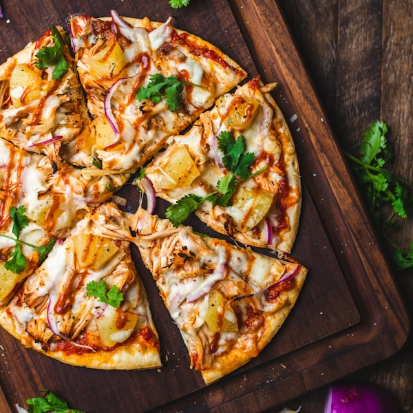
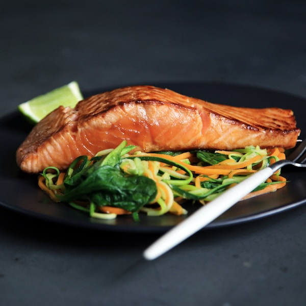

Track calories by meal
Log breakfast, lunch, dinner, and snacks with calories and nutrition details.
Kurdish meal planning, made practical
Discover Kurdish meals, follow recipe steps, plan your week, track calories, save favorites, and filter suggestions around your health conditions.

Chymanhaya focuses on useful daily actions: finding a suitable dish, checking nutrition, logging meals, and deciding what can be cooked from available ingredients.
Features
Log breakfast, lunch, dinner, and snacks with calories and nutrition details.
Build a weekly meal plan so daily eating choices are easier to manage.
Browse meals and desserts with Kurdish names, ingredients, and recipe steps.
Select ingredients you already have and see which dishes you can make.
Hide foods that are not suitable for selected health conditions.
Favorites, settings, custom foods, and meal logs are stored locally in SQLite.
Preview

Recipe steps, ingredients, and nutrition in one place.

Search and save lighter meal ideas for dinner.
Desserts live in their own catalog and stay out of meal planning.
Important
Chymanhaya can help organize food choices, but it is not medical advice. Users with health conditions should consult a doctor or qualified nutrition professional.